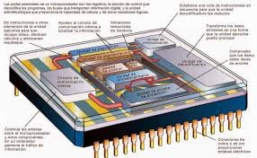
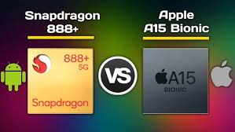
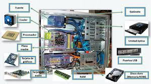

El diseño de los procesadores de teléfonos y computadoras se enfoca en necesidades muy diferentes. En el caso de los teléfonos, la eficiencia energética es primordial debido a que estos dispositivos deben funcionar durante horas sin necesidad de estar conectados a una fuente de energía. Los procesadores de teléfonos móviles como los Snapdragon o los Apple A-series están diseñados para maximizar el rendimiento sin agotar rápidamente la batería, lo que se logra mediante la reducción de tamaño de los transistores y la implementación de técnicas como la modulación dinámica de voltaje y frecuencia.
Los teléfonos requieren chips que puedan manejar tareas relativamente simples, como la navegación web, el uso de aplicaciones, y la visualización de videos, sin sacrificar la duración de la batería. En este sentido, el enfoque de diseño de los SoC (System on Chip) está orientado a equilibrar potencia, consumo energético y tamaño compacto.
Por otro lado, los procesadores de computadoras están diseñados para ofrecer un alto rendimiento, ya que las computadoras se utilizan para tareas que requieren mucho poder de procesamiento, como la edición de video, la creación de contenido en 3D y la ejecución de videojuegos con gráficos complejos. Los procesadores como los Intel Core i9 o AMD Ryzen están enfocados en ofrecer la mayor cantidad de núcleos y la mayor frecuencia de reloj posible, lo que les permite manejar múltiples tareas de forma simultánea y ejecutar aplicaciones pesadas de manera eficiente.
La diferencia de diseño entre los dos tipos de procesadores refleja las necesidades específicas de cada dispositivo y el tipo de usuario al que están dirigidos.
Fuente 1 | Fuente 2

La capacidad de un procesador para manejar tareas depende en gran medida de su arquitectura y el número de núcleos que posee. Los procesadores de teléfonos generalmente tienen un número limitado de núcleos y una frecuencia de reloj más baja en comparación con los procesadores de las computadoras. Esto se debe a que los teléfonos están optimizados para realizar tareas simples y de bajo consumo, como ejecutar aplicaciones ligeras, navegar por internet y realizar videollamadas.
Los procesadores de teléfonos, como los Snapdragon 888 o el Apple A15 Bionic, están diseñados para gestionar tareas cotidianas de manera eficiente y sin sobrecargar la batería. Sin embargo, debido a la limitación en el número de núcleos y la frecuencia de reloj, estos procesadores no son tan efectivos cuando se trata de ejecutar software pesado o de realizar tareas complejas como la edición de video o la simulación 3D.
Por otro lado, los procesadores de computadoras como los Intel Core i9 o AMD Ryzen 9 están construidos para realizar tareas intensivas en recursos. Estos procesadores tienen más núcleos (algunos con más de 16 núcleos) y una mayor frecuencia de reloj, lo que les permite manejar tareas complejas de manera más eficiente. Esto es crucial para profesionales que necesitan ejecutar múltiples aplicaciones al mismo tiempo o que trabajan con programas que requieren gran poder de cómputo, como los que se utilizan para el modelado 3D o los videojuegos de alta gama.
A pesar de estas diferencias, algunos teléfonos modernos, como los de gama alta con chips como el Apple A-series, están comenzando a adoptar tecnologías que mejoran su capacidad multitarea, pero aún así, los procesadores de computadoras continúan siendo más potentes cuando se requiere un rendimiento superior.
Fuente 1 | Fuente 2

El tamaño y consumo de energía de los procesadores varía enormemente entre los dispositivos móviles y las computadoras. Los procesadores de teléfonos están diseñados para ser lo más pequeños y eficientes posible, con el fin de maximizar la duración de la batería sin comprometer demasiado el rendimiento. Esto se logra gracias a los avances en miniaturización, que permiten empaquetar más transistores en un área más pequeña sin generar tanto calor ni consumir tanta energía.
En términos de consumo energético, los procesadores de teléfonos tienen una ventaja significativa sobre las CPUs de computadoras, ya que están hechos para funcionar de manera eficiente durante largas horas sin sobrecalentarse. Esto es fundamental, ya que la vida útil de la batería es una de las características más críticas para los usuarios de teléfonos móviles. Por ejemplo, los chips de 7 nm o 5 nm, como los utilizados en los teléfonos inteligentes, permiten una mayor eficiencia en el uso de la energía, lo que permite a los dispositivos funcionar por más tiempo con una sola carga.
Las CPUs de las computadoras, en cambio, están diseñadas para un rendimiento superior a costa de un mayor consumo energético. Estos procesadores, como el Intel Core i7 o el AMD Ryzen 7, tienen una mayor cantidad de núcleos y frecuencias de reloj más altas, lo que significa que consumen más energía para manejar tareas intensivas en recursos. Sin embargo, las computadoras están conectadas a fuentes de energía constantes, lo que les permite priorizar el rendimiento sobre la eficiencia energética.
En resumen, los procesadores de teléfonos están diseñados para ser pequeños, eficientes y de bajo consumo de energía, mientras que las CPUs de las computadoras están orientadas a ofrecer la máxima potencia sin tener que preocuparse demasiado por la duración de la batería.
Fuente 1 | Fuente 2

La diferencia en diseño, tamaño y consumo de energía tiene un impacto directo en cómo los usuarios experimentan sus dispositivos en el uso diario. Los procesadores de teléfonos están diseñados para ofrecer un rendimiento eficiente en tareas cotidianas como la navegación por Internet, el uso de redes sociales, la visualización de videos y la ejecución de aplicaciones de mensajería. Estos procesadores están optimizados para hacer que la experiencia del usuario sea fluida y eficiente, incluso si se están ejecutando múltiples aplicaciones al mismo tiempo.
La mayor ventaja de los teléfonos inteligentes es que los procesadores móviles, como los de la serie Snapdragon o los Apple A-series, son capaces de equilibrar rendimiento y eficiencia energética. Los teléfonos móviles son herramientas ideales para aquellos que buscan realizar tareas simples de manera eficiente y con una duración de batería que pueda durar todo el día sin problemas. Sin embargo, los dispositivos móviles no están diseñados para realizar tareas más exigentes, como la edición de video en alta resolución o el diseño gráfico.
Por otro lado, las computadoras son el dispositivo preferido para trabajos que requieren un alto rendimiento. Los procesadores de las computadoras permiten realizar tareas complejas como la edición de contenido multimedia, el diseño gráfico, la programación avanzada y la ejecución de videojuegos con gráficos 3D de alta calidad. Los usuarios que necesitan trabajar con aplicaciones que requieren mucho poder de procesamiento se benefician de las computadoras, ya que los procesadores de estas máquinas están diseñados para soportar una carga de trabajo intensiva durante largos períodos sin disminuir el rendimiento.
En términos de uso diario, los teléfonos son ideales para usuarios que buscan conveniencia, movilidad y eficiencia en tareas simples. Las computadoras, por su parte, son imprescindibles para profesionales que requieren potencia y versatilidad en sus tareas diarias.
Fuente 1 | Fuente 2